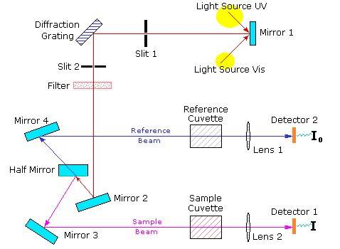

रसायन विज्ञान
→
मॉलेकुलर अब्ज़ॉर्प्शन स्पेक्ट्रोस्कोपी लैब
→
प्रयोगों की सूची
UV-विज़िबल स्पेक्ट्रोस्कोपी से परिचित होना
रंग अनेक पदार्थों का एक महत्वपूर्ण गुणधर्म होता है। हम धात्विक स्वर्ण को उसके चमकदार नारंगी-पीले रंग से पहचान सकते हैं। प्रकाश या विद्युत-चुम्बकीय विकिरण के पदार्थों के साथ संपर्क में आने से विद्युत चुम्बकीय विकिरण के छितरने, उसके अवशोषण, प्रतिबिंबन, विवर्तन आदि जैसे परिणाम मिलते हैं। ये प्रभाव पदार्थ में रंग को जन्म दे सकते हैं। यदि किसी पदार्थ द्वारा कुछ प्रकाश को अवशोषित कर बाकी प्रकाश को ट्रांसमिटेड किया जाता है, तो उस पदार्थ को ट्रांसमिटेड रेडिएशन के संदर्भ में एक पारदर्शी माध्यम कहा जाता है। अपारदर्शी माध्यम से लगभग समूचा प्रकाश वापस रिफ्लेक्ट कर दिया जाता है। जब प्रकाश के सभी रंग मौजूद होते हैं तो सफेद रंग पैदा होता है। दूसरी ओर, जब प्रकाश के सभी रंग अनुपस्थित होते हैं (घटाये जाते हैं, या फ़िल्टर किये जाते हैं या अवशोषित कर लिये जाते हैं), तो काला रंग उत्पन्न होता है। ध्यान देने पर पूरे विज़िबल स्पेक्ट्रम को रंगों के तीन मुख्य क्षेत्रों में विभाजित किया जा सकता है: लाल, हरा और नीला (नीचे चित्र (Figure) 1 को देखें)। इसके साथ ही यह भी देखा जाता है कि इस स्पेक्ट्रम में, जहां दो रंग मिलकर एक और रंग बनाते हैं जैसे कि लाल और हरे से पीला रंग तथा हरे व नीले रंग के विभिन्न संयोजनों से हरा व कासा (cyan) रंग मिलते हैं। इसी तरह, नीले-लाल के मिश्रण से मॅजेंटा/जामुनी रंग मिलता है। दो रंगों को मिलाकर तैयार किये गये रंगों को उस रंग का पूरक कहा जाता है जिसका उपयोग उसे बनाने के लिए नहीं किया गया था। उदाहरण के लिए, लाल, हरे और नीले रंगों में से, लाल और हरे रंग का संयोजन पीले रंग का उत्पादन करता है (नीले रंग का उपयोग नहीं किया गया है) और इसीलिए नीले रंग का पूरक रंग पीला है। रंगों की एक जोड़ी जो आपस में जुड़कर सफेद प्रकाश का उत्पन्न करती है, उन्हें पूरक रंग कहा जाता है, क्योंकि एक-साथ मिलकर वे स्पेक्ट्रम पूरा करते हैं। हमने पहले देखा है कि संपूर्ण विज़िबल स्पेक्ट्रम को मुख्य रूप से रंगों के 3 मुख्य क्षेत्रों में विभाजित किया जा सकता है : लाल, हरा और नीला (नीचे चित्र (Figure) 1 देखें), वर्णक्रम में लगभग एक तिहाई (1/3) का योगदान करने वाले हर रंग का एक क्षेत्र। इसीलिए, जब प्रकाश के लाल व हरे रंग आपस में मिलकर पीले रंग का उत्पादन करते हैं, तो पूरे विज़िबल स्पेक्ट्रम के दो-तिहाई (लाल का 1/3 + हरे रंग का 1/3) का उपयोग किया जाता है और केवल एक-तिहाई (नीले क्षेत्र का) छोड़ दिया जाता है। इसलिए पीले रंग के 2/3 क्षेत्र (लाल रंग का 1/3 + हरे रंग का 1/3) में इस 1/3 नीले क्षेत्र का जुड़ना समूचे स्पेक्ट्रम को पूरा करता है। इस प्रकार, नीला रंग, पीले रंग का पूरक है और इसके उलट, पीला रंग नीले का पूरक।
चित्र (Figure) 1. क) विज़िबल स्पेक्ट्रम के तीन मुख्य क्षेत्र। ख) तीन मुख्य रंग अनुपूरक ढंग से जुड़कर विभिन्न रंग (सफेद पृष्ठभूमि की अनुपस्थिति में) और सफेद प्रकाश का उत्पन्न करते हैं। (ग) पूरक रंग। विपरीत त्रिकोण पूरक रंगों के सूचक हैं। त्रिकोण में कोई भी रंग, दो आसन्न त्रिकोणों पर रंगों के संयोजन से उत्पन्न होता है। (घ) रंगों के विभिन्न ऋणात्मक संयोजनों द्वारा रंगों की उत्पत्ति (सफेद पृष्ठभूमि की उपस्थिति में)।
निम्नलिखित चित्र में अन्य रंगों और पूरक रंगों को उत्पन्न करने वाले रंगों का संयोजन, रंग बहुभुज के रूप में दिया गया है। लाल रंग का पूरक रंग सायन है और हरे रंग का मैजेंटा है। पेंटिंग, फोटोग्राफी, प्रिंटिंग, फैब्रिक डाइंग, इत्यादि जैसे हमारे अधिकांश व्यावहारिक प्रयोगों में रंगों को ऋणात्मक सिद्धांतों द्वारा उत्पन्न किया जाता है। ऐसे मामलों में, या तो हम सफेद पृष्ठभूमि के साथ या सभी प्रकाशों की उपस्थिति के साथ शुरू करते हुए इस सफेद प्रकाश स्पेक्ट्रम से कुछ प्रकाश घटाते चलते हैं और इससे निकलने वाले अन्य रंगों के संयोजन देखते हैं। कुछ प्रकाश को घटाने के लिए पेंट, स्याही, फिल्टर आदि का उपयोग किया जाता है। ऋणात्मक मिश्रण सिद्धांत के द्वारा रंग उत्पादन को समझने के लिए, हम निम्नलिखित उदाहरण लेते हैं। कागज़ के एक टुकड़े पर कुछ स्याही डालें। विज़िबल लाइट के लगभग सभी रंगों के रिफ्लेक्ट होने के कारण कागज़ के इस टुकड़े की पृष्ठभूमि सफेद है। स्याही इस स्पेक्ट्रम से कुछ प्रकाश को घटा (अवशोषित कर) लेगी और बाकी प्रकाश का परावर्तन/प्रतिबिंबन होने देगी। अब अगर हम यह मानते हैं कि स्याही पीला रंग (लाल और हरे रंग के क्षेत्रों का संयोजन) घटाती है (अवशोषित करती है), तो स्पेक्ट्रम से लाल और हरे रंग अनुपस्थित होंगे और मुख्य रूप से नीले रंग का क्षेत्र प्रतिबिंबित होगा। इसलिए, स्याही नीले रंग में दिखाई देगी। इसी तरह एक पीली स्याही लाल और हरे प्रकाश को दर्शाती है और नीले प्रकाश को अवशोषित कर लेती है। कोई भी रंग उसके पूरक रंग को घटाता है। चलिये हम एक पारदर्शी घोल का उदाहरण देखें। चित्र (Figure) 2 में, मुख्य रूप से हरे रंग के प्रकाश को अवशोषित करते हुए इसके पूरक रंग, मैजेंटा को घोल के रंग के बतौर देखा जाता है।

चित्र (Figure) 2. एक घोल में प्रकाश का अवशोषण और रंग उत्पादन।
प्रकाश ऊर्जा के अवशोषण में विकिरण क्षेत्र से अवशोषक तक ऊर्जा का स्थानांतरण होता है, जिसके कारण, अवशोषक का निम्न से उच्चतर ऊर्जा स्तर पर संक्रमण होता है। UV विज़िबल लाइट के अवशोषण से इलेक्ट्रॉनों का संचरण एक ऊर्जा स्तर से दूसरे (अन्य परिस्थितियों के हिसाब से) स्तर तक हो सकता है। UV विज़िबल लाइट एक्साइटेशन के तहत इलेक्ट्रॉनिक संचरण का अध्ययन UV विज़िबल अब्ज़ॉर्प्शन स्पेक्ट्रोस्कोपी के रूप में जाना जाता है। एक अणु में, आधार व उत्तेजित इलेक्ट्रॉनिक ऊर्जा स्तरों के बीच ऊर्जा अंतराल की गणना, नाभिक और इलेक्ट्रॉनों के बीच बंधक शक्ति के हिसाब से की जाती है। इसलिए, किसी संचरण की विशिष्ट ऊर्जा और अवशोषित विकिरण की तरंग-माप, परमाणुओं के एक समूह के गुणधर्म होते हैं। ऐसे अवशोषण के कारक परमाणु-समूह को क्रोमोफोर कहा जाता है। OH, NH, SH, इत्यादि जैसे बिन साझे युग्मों वाले स्थानापन्न जब एक π क्रोमोफोर से जुड़ते हैं तो आम तौर पर अधिकतम अवशोषण को बड़ी तरंग-माप तक ले जाते हैं। इन स्थानापन्नों (सब्स्टिचूअन्ट) को ऑक्सोक्रोम कहा जाता है। निम्नलिखित चार प्रभावों में से एक क्रोमोफोर पर स्थानापन्नों का कोई भी प्रभाव पड़ सकता है : (i) बॉथोक्रोमिक शिफ्ट (रेड शिफ्ट)- लांगर वेवलेंग्थ में शिफ्ट होना (λ) या कम ऊर्जा तक शिफ्ट, (ii) हिप्सोक्रोमिक शिफ्ट (नीला शिफ्ट)- छोटी तरंग-माप (λ) या उच्चतर ऊर्जा तक शिफ्ट, (iii) हाइपरक्रोमिक प्रभाव-एक बैंड की अवशोषण क्षमता (तीव्रता) में वृद्धि, (iv) हाइपोक्रोमिज़्म एक बैंड की अवशोषण क्षमता (तीव्रता) में कमी। विभिन्न पदार्थ, प्रकाश की विभिन्न तरंग-माप को अवशोषित करते हैं। इसलिए, किसी पदार्थ द्वारा अधिकतम अवशोषण की वेवलेंग्थ उस पदार्थ के विशिष्ट गुणों में से एक होती है।
सबसे संभावित संक्रमण अक्सर सबसे अधिक अधिग्रहीत मॉलेकुलर ऑर्बिटल (एच.ओ.एम.ओ./HOMO) से सबसे कम अधिग्रहीत मॉलेकुलर ऑर्बिटल (एल.यू.एम.ओ./LUMO) तक होता है। पॉलीऐटॉमिक/बहुपरमाणविक अणुओं में, प्रारंभिक और अंतिम ऑर्बिटल्स को परिभाषित करके इलेक्ट्रॉनिक संक्रमण को वर्गीकृत करना सुविधाजनक होता है। उदाहरण के लिए, यदि एक इलेक्ट्रॉनिक संक्रमण, एक बॉण्डिंग पाई (π) ऑर्बिटल से एंटीबॉण्डिंग पाई (π ∗ ) ऑर्बिटल तक होता है, तो हम इसे एक π→π ∗ संक्रमण कहते हैं और इसी तरह नॉनबॉण्डिंग ऑर्बिटल (n) से एक एंटीबॉण्डिंग पाई ऑर्बिटल (π ∗ ) में संक्रमण को n→π ∗ संक्रमण के बतौर जाना जाता है। चित्र (Figure) 3, कुछ ऐसे ही संक्रमणों की रूपरेखा दिखाता है

चित्र (Figure) 3. सामान्य इलेक्ट्रॉनिक संक्रमण और प्रकाश अवशोषण।
परमाणुओं के मामलों में, ऐसे संक्रमणों के परिणामस्वरूप अवशोषी प्रजातियों के ऊर्जा स्तरों में अंतर की लाक्षणिक तरंग-मापों पर अत्यंत संकीर्ण अवशोषक स्पेक्ट्रल बैंड्स बनते हैं। हालांकि, अणुओं के मामलों में विस्तीर्ण स्पेक्ट्रल बैंड अक्सर देखे जाते हैं। चूंकि इलेक्ट्रॉनिक ऊर्जा, स्पंदन और घूर्णन ऊर्जाओं से अधिक होती है, स्पंदन और घूर्णन ऊर्जा स्तर, इलेक्ट्रॉनिक ऊर्जा स्तरों के ऊपर रखे जाते हैं। इसलिए, कोई भी इलेक्ट्रॉनिक संक्रमण कई स्पंदन और घूर्णन संक्रमणों (कुछ स्थितियों के अधीन) के साथ जुड़ा हो सकता है, जिसमें विभिन्न ऊर्जा ब्रॉडन बैंड्स को जन्म देती हैं (नीचे चित्र (Figure) 4 देखें)। विलायक-विलेय अन्त:क्रियाएं भी स्पेक्ट्रल बैंड को विस्तार देती हैं।

चित्र (Figure) 4. अणुओं में इलेक्ट्रॉनिक संक्रमण और UV-विज़िबल स्पेक्ट्रल बैंड की उत्पत्ति। S का मतलब सिंग्लेट इलेक्ट्रॉनिक एनर्जी स्टेट।
चार्ज-ट्रांसफर संक्रमण एक अन्य प्रकार का इलेक्ट्रॉनिक संक्रमण है जो बहुतेरे संक्रमण धात्विक कॉम्प्लेक्सों और अकार्बनिक पिगमेंट के प्रबल रंग के लिए ज़िम्मेदार होता है। चार्ज-ट्रांसफर संक्रमणों में, एक इलेक्ट्रॉन, धातु के एक d ऑर्बिटल से लिगैंड्स के किसी खाली ऑर्बिटल में या इसके उलट स्थानांतरित होता है। उदाहरण के लिए, O परमाणु से Mn परमाणु तक एक इलेक्ट्रॉन ट्रांसफर, पानीदार (ऐक्वीअस) परमैंग्नेट आयन, MnO4 − के तीव्र बैंगनी रंग का कारण बनता है।
एक टिपिकल UV-विज़िबल स्पेक्ट्रोफोटोमीटर में निम्नलिखित डिज़ाइन घटक होने चाहिए : एक प्रकाश स्रोत (जो एक खास तरंग-माप या तरंग-मापों वाला प्रकाश उत्पन्न करता है), एक डिस्पर्शन/विकिरण उपकरण (विभिन्न कोणों पर प्रकाश की अलग-अलग तरंग-मापों के छितराव/विकिरण का कारण बनता है), सैंपल चैंबर, और एक या ज्यादा डिटेक्टर। UV-विज़िबल स्पेक्ट्रोफोटोमीटर में दो प्रकाश स्रोत हो सकते हैं : एक UV रेंज के लिए (जैसे कि एक ड्यूटेरियम आर्क लैंप) और दूसरा विज़िबल रेंज के लिए (जैसे, टंगस्टन-हैलोजन लैंप)।
डिस्पर्शन/विकिरण उपकरण स्रोत प्रकाश को वेवलेंग्थ के एक "इंद्रधनुष" (यानी, प्रकाश की विभिन्न तरंग-मापों में) में फैलाता है, जो फिर सैंपल पर लक्षित किये जाते हैं। प्रिज़्म और होलोग्राफिक छलनियां ऐसे दो डिस्पर्शन/विकिरण उपकरण हैं जो आमतौर पर UV-विज़िबल स्पेक्ट्रोफोटोमीटर में इस्तेमाल होते हैं। एक पारंपरिक स्पेक्ट्रोफोटोमीटर में, डिस्पर्शन/विकिरण उपकरण के इर्द-गिर्द, एक प्रवेश झिरी और एक निकास झिरी मिलकर मोनोक्रोमेटर बनाते हैं। मोनोक्रोमेटर से निकलने वाली रोशनी सैंपल ब्लैंक और/या सैंपल से होकर गुज़रती है। संचरित प्रकाश की तीव्रता को फोटोडिटेक्टर से मापा जाता है। फोटोमल्टीप्लायर ट्यूब्स (PMTs) या फोटोडायोड्स (फोटोडायोड विन्यास) आमतौर पर डिटेक्टर के रूप में इस्तेमाल किये जाते हैं। सैंपल के पीछे फोटोडिटेक्टर प्रकाश उत्तेजना (स्टिम्यलस) प्राप्त करता है और एक एनलॉग इलेक्ट्रॉनिक करंट उत्पन्न करता है, जिसे बाद में एक प्रयोग करने योग्य प्रारूप में बदल दिया जाता है और आगे के विश्लेषण के लिए कंप्यूटर में डाला जाता है। एक पारंपरिक स्पेक्ट्रोफोटोमीटर में, स्पेक्ट्रम, क्रमिक तरीके से प्राप्त किया जाता है-एक के बाद दूसरी तरंग-माप, समय के एक कारक के बतौर। एक डायोड-विन्यास स्पेक्ट्रोफोटोमीटर में, सैंपल में से गुज़रने के बाद बहुरंगी प्रकाश, पॉलीक्रोमेटर की प्रवेश झिरी पर एकाग्र होता है। यह संचरित प्रकाश फिर डायोड विन्यास पर विकरित होता है जहां प्रत्येक डायोड, स्पेक्ट्रम के एक हिस्से को मापता है। यानी, डायोड-विन्यास स्पेक्ट्रोफोटोमीटर में, डिटेक्टर सभी तरंग मापों को एक साथ देखता है।
प्रकाश पुंज के हिसाब से, दो अलग-अलग प्रकार के स्पेक्ट्रोफोटोमीटरों का उपयोग किया जाता है-सिंगल-बीम और डबल-बीम स्पेक्ट्रोफोटोमीटर। सिंगल-बीम में पारंपरिक और डायोड-विन्यास स्पेक्ट्रोफोटोमीटर, दोनों शामिल होते हैं। इसमें सिंगल-बीम द्वारा पहले सैंपल ब्लैंक को आलोकित किया जाता है और फिर सैंपल को अलग से आलोकित किया जाता है। एक डबल-बीम उपकरण रेफरेंस (सैंपल ब्लैंक) के ऑप्टिकल मार्ग और सैंपल के ऑप्टिकल मार्ग के बीच प्रकाश पुंज को विभाजित करता है और उनके बीच प्रकाश की तीव्रता की तुलना करता है। बीम का विभाजन दो तरह से पूरा होता है। एक स्थिर विधि में, एक आंशिक रूप से संचारी दर्पण का उपयोग किया जाता है जो प्रकाश को रेफरेंस सेल और सैंपल सेल में एक ही समय में भेजता है। कुछ स्पेक्ट्रोफोटोमीटर्स में, एक 'चॉपर', प्रकाश पथ की अदला बदली करता है। दोनों स्पेक्ट्रोफोटोमीटर्स के अपने-अपने फायदे हैं। एक डबल बीम उपकरण से हम प्रकाश स्रोत, डिटेक्टरों और संबद्ध इलेक्ट्रॉनिक उपकरणों की बेहतर स्थिरता की उम्मीद करते हैं। इसका एक नुकसान तो यह है कि मोनोक्रोमेटर तक पहुंचने से पहले बीम्स को फिर से एकजुट करने के लिए ज़रूरी सटीकता नहीं मिल पाती। दर्पणों, अन्य प्रकाशकीय साधनों और उनकी कोटिंग्स/परतों की क्वालिटी और इन उपकरणों पर धूल जमना आदि सिंगल बीम उपकरणों की तुलना में दोहरे बीम उपकरणों की देखरेख कठिन बना देते हैं। एकल बीम उपकरण में, केवल एक क्युवेट होल्डर होता है, इसलिए, दो बार माप लेना ज़रूरी हो जाता है। डबल बीम उपकरण में दो सेल-होल्डरों के चलते, सैंपल और सैंपल ब्लैंक (रेफरंस), एक ही मापन में एक साथ स्कैन कर लिये जाते हैं। डायोड विन्यास स्पेक्ट्रोफोटोमीटर एक मल्टीचैनल उपकरण है। हालांकि इसमें दो मापन ज़रूरी होते हैं, लेकिन मापन बहुत तेज़ (0.1s) होते हैं और कम रिज़ॉल्यूशन वाले होते हैं।
एक औसत डबल-बीम यूवी विज़िबल स्पेक्ट्रोफोटोमीटर की समूची रूपरेखा को नीचे चित्र (Figure) 5 में दिखाया गया है।

चित्र (Figure) 5. एक सामान्य डबल-बीम UV-विज़िबल स्पेक्ट्रोफोटोमीटर की रूपरेखा।
प्रकाश का अवशोषण आमतौर पर संचारण (T) या शोषण (A) के संदर्भ में प्रयोगात्मक रूप से मापा जाता है। संचारण को T = I / I 0 के रूप में परिभाषित किया गया है, जहां I सैंपल के पार गुज़रने के बाद प्रकाश की तीव्रता है और I 0 प्रारंभिक प्रकाश तीव्रता है। A और T के बीच का संबंध है- $$A = -log_{10}T = -log_{10} {I \over I_{0}}$$
कलरीमीटर और स्पेक्ट्रोफोटोमीटर जैसे आधुनिक अवशोषण मापी उपकरण आमतौर पर डेटा का संचारण, % संचारण, या अवशोषण क्षमता के रूप में प्रदर्शित कर सकते हैं। एक स्पेक्ट्रोफोटोमीटर में, प्रकाश की वेवलेंग्थ की एक पूरी श्रंखला एक पदार्थ या एक सैंपल सेल और एक समान रूपी रेफरेंस सेल से होकर गुज़रती है। सैंपल में प्रवेश करने वाले प्रकाश की तीव्रता और उससे बाहर निकलने वाले प्रकाश की तीव्रता की तुलना एक उपयुक्त स्पेक्ट्रम पैदा करके की जाती है। असल में, एक अवशोषण प्रयोग में प्रकाश क्षीणन कई प्रक्रियाओं के चलते होता है, जैसे कि विलायक द्वारा अवशोषण से, हवा और सैंपल के परस्पर-मेलमिलाप से होने वाले प्रतिबिंबन से, क्रोमोफोर के अलावा सैंपल और क्युवेट से। इन कारकों को अक्सर I
0
को इस तरह परिभाषित करके हटा दिया जाता है, मानो यह सैंपल "ब्लैंक" या रेफरेंस सैंपल ("बेसलाइन" करेक्शन) से गुज़रने वाला प्रकाश हो। एक सैंपल ब्लैंक या रेफरेंस सैंपल, क्रोमोफोर पदार्थ को छोड़कर, विलायक और अन्य पदार्थ होते हैं, यदि कोई हो तो। विभिन्न प्रकार के सैंपल होल्डर या सैंपल सेल्स मिलते हैं। सैंपल सेल का चयन कई कारकों के हिसाब से होता है, जैसे कि पाथ लेंग्थ, आकार, साइज़, चुनी हुई तरंग-माप पर संचरण की विशिष्टताएं आदि। सैंपल या उसके ब्लैंक को धारण करने वाली कोशिका/ सेल, दर्ज किये जाने वाले तरंग-माप क्षेत्र के लिए पारदर्शी होनी चाहिए। बेहतर UV प्रकाश संचरण के लिए एक क्वार्ट्ज़ या फ्यूज़्ड सिलिका क्युवेट चुना जाता है। सिलिकेट ग्लास क्युवेट 350 और 2000 एनएम तरंग-माप के बीच उपयोग के लिए चुना जा सकता है। सेल्स आमतौर पर 10 मिमी से लेकर 1 मिमी तक की अलग-अलग पाथलेंग्थ्स के साथ आयताकार होती हैं।